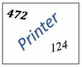

<!DOCTYPE html>
<html>
<head>
  <meta charset="utf-8">
  <title>Employee Attributes</title>
  <script src="jspsych/jspsych.js"></script>
 <script src="jspsych/plugin-instructions.js"></script>
 <script src="https://unpkg.com/@jspsych-contrib/plugin-pipe"></script>
  <script src="jspsych/plugin-html-button-response.js"></script>
  <script src="jspsych/plugin-survey-likert.js"></script>
  <script src="jspsych/plugin-html-keyboard-response.js"></script>
  <script src="jspsych/plugin-survey-multi-choice.js"></script>
  <script src="jspsych/plugin-survey-text.js"></script>
  <script src="jspsych/plugin-survey-html-form.js"></script>
  <link href="./css/jspsych.css" rel="stylesheet" type="text/css"></link>
  <style>
    body { font-family: Arial, sans-serif; }
    .container { display: flex; gap: 20px; margin-bottom: 30px; }
    .dropzone {
      border: 2px dashed #ccc;
      padding: 10px;
      min-height: 150px;
      width: 200px;
      border-radius: 8px;
      background-color: #fdfdfd;
    }
    .task {
      padding: 10px;
      margin: 5px;
      border-radius: 5px;
      cursor: grab;
      user-select: none;
    }
    .yellow { background-color: #f9e79f; }
    .blue { background-color: #aed6f1; }
  </style>
</head>
<body></body>
<script>

const jsPsych = initJsPsych({
    on_finish: (data) => {
        console.log(data);
        data.boot = boot;
        // Only redirect to Prolific if participant was NOT booted out
        if(!boot) {
            document.body.innerHTML = 
                `<div align='center' style="margin: 10%">
                    <p>Thank you for participating!<p>
                    <b>You will be automatically re-directed to Prolific in a few moments.</b>
                </div>`;
            setTimeout(() => { 
                location.href = `https://app.prolific.co/submissions/complete?cc=${completionCode}`
            }, 1000);
        }
        // If boot = true, the experiment already ended with a message, so do nothing
    },
}); 

let boot = false;

// set and save subject ID
let subject_id = jsPsych.data.getURLVariable("PROLIFIC_PID");
if (!subject_id) { subject_id = jsPsych.randomization.randomID(10) };
jsPsych.data.addProperties({ subject: subject_id });

// define file name
const filename = `${subject_id}.csv`;

// define completion code for Prolific
const completionCode = "CX5ABNV3"; // need to change to prolific completion code


const randomAssignment = Math.floor(Math.random() * 3) + 1; 

console.log(randomAssignment)

var text = {
  status1: randomAssignment === 1 ? 'fully remotely' : 
          randomAssignment === 2 ? 'on a hybrid schedule' : 
          'fully in person', 

  status2: randomAssignment === 1 ? 'remotely 100% of the time' : 
          randomAssignment === 2 ? 'remotely 50% of the time and in person 50% of the time' : 
          'in the office 100% of the time', 

  status3: randomAssignment === 1 ? 'remotely for all five days of the week' : 
          randomAssignment === 2 ? 'remotely for half of the week and in the office for the other half' : 
          'in the office for all five days of the week',
  status4: randomAssignment === 1 ? '(Remote)' : 
          randomAssignment === 2 ? '(Hybrid)' : 
          '(In Person)'

};

const consent = {
  type: jsPsychInstructions,
  pages: [
    `<p style='font-size: 18px; max-width: 800px; margin: 0 auto;text-align: center;'>
    <p>TITLE: Employee Attributes</p>

<p>DESCRIPTION: You are invited to participate in research investigating employee attributes. You will be asked to read a description of an employee and to answer various questions about the employee. </p>


<p>TIME INVOLVEMENT: In total, your participation will take approximately 2 minutes. </p>

<p>RISKS AND BENEFITS: Risks and discomfort associated with this study are not anticipated beyond those involved in normal, daily computer use. There are no foreseeable psychological risks and benefits beyond those involved in normal, daily life, such as when reading the news. We cannot and do not guarantee or promise that you will receive any personal benefits from this study. </p>


<p>PAYMENT: You will receive $.30 as payment for your participation. </p>


<p>CONFIDENTIALITY: All records will be stored completely confidentially. No one will access your data except the research team. Any identifying information collected will not be associated with your responses. </p>


<p>PARTICIPANT’S RIGHTS: If you have read this form and have decided to participate in this project, please understand your participation is entirely voluntary. You have the right to withdraw your consent or discontinue participation at any time without penalty or loss of benefits to which you are otherwise entitled. The alternative is not to participate. You have the right to refuse to answer particular questions. The results of this research study may be presented at scientific or professional meetings or published in scientific journals. </p>


<p>CONTACT INFORMATION: If you have any questions, concerns, or complaints about this research, its procedures, risks, and benefits, contact josetan@stanford.edu. If you are not satisfied with how this study is being conducted, or if you have any concerns, complaints, or general questions about the research or your rights as a participant, please contact the Stanford Institutional Review Board (IRB) to speak to someone independent of the research team at (650)-723-2480 (for medical studies), 650-723-2480 or email at IRB2-Manager@lists.stanford.edu (for non-medical studies), or toll free at 1-866-680-2906. You can also write to the Stanford IRB, Stanford University, 1705 El Camino Real, Palo Alto, CA 94306. </p>


<p>YOU MUST BE 18 OR OLDER TO PARTICIPATE. You recognize that you are 18 or older by consenting to participate.</p>


<p>Click "Next" to consent to participate in this study.</p>
`,
  ],
  show_clickable_nav: true,
  allow_keys: false,
  allow_backward: true
};


const welcomeInstructions = {
  type: jsPsychInstructions,
  pages: [
    `<div style='position: relative; width: 950px; height: 390px; margin: 0 auto; text-align: center; padding: 40px; line-height: 1.6;'>
      <p style='font-size: 18px; max-width: 800px; margin: 0 auto;'>
          <p>Welcome to the study!</p>
        <p>You are invited to participate in this study based on your experiences and perspective as a leader within your respective organizations.
      </p>
    </div>`,
    
    `<div style='position: relative; width: 950px; height: 390px; margin: 0 auto; text-align: center; padding: 40px; line-height: 1.6;'>
      <p style='font-size: 18px; margin-bottom: 20px;'>
        <p>In most organizations, employees work on a combination of individual and team-based projects. </p>
        <p>Although employees may shape aspects of their jobs over time, managers often assign specific roles and distribute tasks to align with the employees' motives, strengths, and interests. </p><p>This helps boost both performance and engagement. </p>
      </p>
    </div>`,

    `<div style='position: relative; width: 950px; height: 390px; margin: 0 auto; text-align: center; padding: 40px; line-height: 1.6;'>
      <p style='font-size: 18px; margin-bottom: 20px;'>
        <p>Imagine that you manage several teams within a large organization. </p>
        <p>Each team includes employees from different functions and roles, with varying work arrangements. 
        <p>Some team members are <b><span style='color: blue;'>fully remote</b></span>, some follow a <b><span style='color: blue;'>hybrid schedule</b></span>, and others work <b><span style='color: blue;'>fully in the office. </b></span>
      </p>
      </div>`,

      `<div style='position: relative; width: 950px; height: 390px; margin: 0 auto; text-align: center; padding: 40px; line-height: 1.6;'>
      <p style='font-size: 18px; margin-bottom: 20px;'>
        Imagine that one of your employees, Employee A, works <b><span style='color: blue;'>${text.status1}.</span></b></p>
        </p>
        </div>`,

      `<div style='position: relative; width: 950px; height: 390px; margin: 0 auto; text-align: center; padding: 40px; line-height: 1.6;'>
      <p style='font-size: 18px; margin-bottom: 20px;'>
        <p><span style='color: darkgray;'>Imagine that one of your employees, Employee A, works <b>${text.status1}.</span></b></p>
        <p>That is, this employee works <b><span style='color: blue;'>${text.status2}. </span></b></p> 
      </p>
    </div>`,


      `<div style='position: relative; width: 950px; height: 390px; margin: 0 auto; text-align: center; padding: 40px; line-height: 1.6;'>
      <p style='font-size: 18px; margin-bottom: 20px;'>
        <p><span style='color: darkgray;'>Imagine that one of your employees, Employee A, works <b>${text.status1}.</b></span></p>
        <p><span style='color: darkgray;'>That is, this employee works <b>${text.status2}. </span></b></p> 
        <p>Out of the five-day workweek, they work <b><span style='color: blue;'>${text.status3}.</span></b></p>
      </p>
    </div>`,
  ],
  show_clickable_nav: true,
  allow_keys: false,
  allow_backward: false
};

const employmentStatusQuestion = {
  type: jsPsychSurveyMultiChoice,
  questions: [
    {
      prompt: "What is your employment status?",
      name: "employment_status",
      options: [
        "Employed full-time",
        "Employed part-time", 
        "Due to start a new job within the next month",
        "Unemployed (and job seeking)",
        "Not in paid work (e.g., homemaker, retired, disabled)",
        "Other"
      ],
      required: true
    }
  ],
  on_finish: function(data) {
    // Check if participant selected full-time or part-time employment
    const validResponses = ["Employed full-time", "Employed part-time"];
    data.passes_employment_check = validResponses.includes(data.response.employment_status);
    jsPsych.data.addProperties({randomAssignment});
  }
};


const supervisorQuestion = {
  type: jsPsychSurveyMultiChoice,
  questions: [
    {
      prompt: "At work, do you have any supervisory responsibilities? In other words, do you have the authority to give instructions to subordinates?",
      name: "supervisor_status", // Changed from "employment_status" to avoid confusion
      options: [
        "Yes",
        "No",
        "I would rather not say"
      ],
      required: true
    }
  ],
  on_finish: function(data) {
    // Check if participant selected "Yes"
    data.passes_supervisor_check = data.response.supervisor_status === "Yes";
  }
};

const ineligibleMessage = {
  type: jsPsychHtmlButtonResponse,
  stimulus: `
    <div style='text-align: center; padding: 50px; max-width: 600px; margin: 0 auto;'>
      <h2 style='color: #d32f2f; margin-bottom: 30px;'>Ineligible for Survey</h2>
      <p style='font-size: 18px; line-height: 1.6; margin-bottom: 30px;'>
        We apologize for the inconvenience. Due to your status on Prolific Academic, you are ineligible for the survey.
      </p>
      <p style='font-size: 16px; line-height: 1.6;'>
        Please return the survey to avoid having your work rejected.
      </p>
    </div>
  `,
  choices: ['End Study'],
  on_finish: function() {
    boot = true;
    // End the experiment
  //  jsPsych.endExperiment('Thank you. The study has ended.');
  }
};

const employmentScreening = {
  timeline: [employmentStatusQuestion, supervisorQuestion, ineligibleMessage],
  conditional_function: function() {
    // Show ineligible message only if they failed the employment check
    const lastTrial = jsPsych.data.get().last(1).values()[0];
    return !lastTrial.passes_employment_check;
  }
};

const attentionCheck = {
  type: jsPsychSurveyMultiChoice,
  questions: [
    {
      prompt: `
 <style>
          .required { display: none !important; }
          .required::after { display: none !important; }
        </style>
        <div style='font-size: 18px; line-height: 1.6; margin-bottom: 20px;'>
          <p>If you are reading these instructions carefully, please do not select the correct answer. Instead, please select the last option.</p>
          <p>3+7+9=</p>
        </div>
      `,
      name: "attention_check",
      options: ["19", "20", "21"],
      required: true
    }
  ],
  on_finish: function(data) {
    // Check if participant selected "21" (the last option)
    data.passes_attention_check = data.response.attention_check === "21";
  }
};

const attentionFailMessage = {
  type: jsPsychHtmlButtonResponse,
  stimulus: `
    <div style='text-align: left; font-family: Arial, sans-serif; padding: 50px; max-width: 700px; margin: 0 auto; line-height: 1.6;'>
      <h2 style='color: #d32f2f; margin-bottom: 30px; text-align: center;'>Attention Check Failed</h2>
      
      <p style='font-size: 16px; margin-bottom: 20px;'>
        We apologize for the inconvenience. The attention check was as follows:
      </p>
      
      <div style='background-color: #f5f5f5; padding: 20px; border-radius: 5px; margin: 20px 0;'>
        <p style='margin-bottom: 10px;'><strong>If you are reading these instructions carefully, please do not select the correct answer. Instead, please select the last option.</strong></p>
        <p style='margin-bottom: 10px;'>3+7+9=</p>
        <p>Response options were as follows: 19 / 20 / 21</p>
      </div>
      
      <p style='font-size: 16px; margin-bottom: 20px;'>
        Although "19" is the mathematically correct answer, the correct answer for this attention check is "21."
      </p>
      
      <p style='font-size: 16px; margin-bottom: 20px;'>
        You did not pass the attention check. Please return your survey to avoid having your work rejected.
      </p>
    </div>
  `,
  choices: ['End Study'],
  on_finish: function() {  
    boot = true;
  }
};

const attentionCheck2 = {
  type: jsPsychSurveyText,
  questions: [
    {
      prompt: `
        <div style='font-size: 18px; line-height: 1.6; margin-bottom: 20px;'>
          <p>To let us know that you are not a robot, please type the letters of the word (not the numbers) you see in the following image into the response box below. </p> <p>Note that the response box is case sensitive. Please do not leave any spaces before or after the word.</p>
          <div style='text-align: center; margin: 20px 0;'>
            
          </div>
        </div>
      `,
      name: "captcha_response",
      required: true,
      rows: 1,
      columns: 20
    }
  ],
  on_finish: function(data) {
    // Check if participant typed exactly "printer"
    const validResponses = ["printer", "Printer"];
  data.passes_attention_check2 = validResponses.includes(data.response.captcha_response);
  }
};

const attentionFail2Message = {
  type: jsPsychHtmlButtonResponse,
  stimulus: `
    <div style='text-align: center; font-family: Arial, sans-serif; padding: 50px; max-width: 600px; margin: 0 auto;'>
      <h2 style='color: #d32f2f; margin-bottom: 30px;'>Attention Check Failed</h2>
      <p style='font-size: 18px; line-height: 1.6; margin-bottom: 30px;'>
        We apologize for the inconvenience. You did not pass the attention check.
      </p>
      <p style='font-size: 16px; line-height: 1.6;'>
        Please return your survey to avoid having your work rejected.
      </p>
    </div>
  `,
  choices: ['End Study'],
  on_finish: function() {
    boot = true;
  }
};

const nextInstructions = {
  type: jsPsychInstructions,
  pages: [
    `<div style='position: relative; width: 950px; height: 390px; margin: 0 auto; text-align: center; padding: 40px; line-height: 1.6;'>
      <p style='font-size: 18px; margin-bottom: 20px;'>
        As a manager, your role involves assigning tasks that align with your team members' strengths and interests.
      </p>
      <p style='font-size: 18px;'>
        On the next page, you'll see a cork board with 6 available tasks. </p> <p> Please choose three tasks from the list that you believe are best suited to this employee. </p> <p> Select the tasks that you believe may most effectively enhance their engagement and motivation. </p>
      </p>
    </div>`
  ],
  show_clickable_nav: true,
  allow_keys: false,
  allow_backward: false,
};


const Scale = ['1<br>Not at all', '2<br>', '3<br>', '4<br>Somewhat', '5<br>', '6<br>', '7<br>Very much']

sheldonRelatedness = {
    type: jsPsychSurveyLikert,
    preamble: () => {
     
    return `<div style='padding-top: 50px; width: 900px; font-size:16px'> 
        <p style='font-size: 18px; margin-bottom: 20px;'>
        As a reminder, Employee A works <b><span style='color: blue;'>${text.status1}.</b></span></p>
        <h3 style='font-size: 20px; font-weight: bold; margin-bottom: 20px;'>I believe that this employee would value feeling...</h3>
        </div>`;
},
            questions: () => {
            return [
        {
            prompt: `... a sense of contact with people who care for them and whom they care for`,
            name: `Relatedness_1`,
            labels: Scale,
            required: true,
        },
        {
            prompt: `... close and connected with other people who are important to them`,
            name: `Relatedness_2`,
            labels: Scale,
            required: true,
        },
        {
            prompt: `...a strong sense of intimacy with the people they spend time with`,
            name: `Relatedness_3`,
            labels: Scale,
            required: true,
        }
    ];
},
    randomize_question_order: true,
    scale_width: 600,
};


sheldonAutonomy = {
    type: jsPsychSurveyLikert,
    preamble: () => {
     
    return `<div style='padding-top: 50px; width: 900px; font-size:16px'> 
        <p style='font-size: 18px; margin-bottom: 20px;'>
       As a reminder, Employee A works <b><span style='color: blue;'>${text.status1}.</b></span></p>
        <h3 style='font-size: 20px; font-weight: bold; margin-bottom: 20px;'>I believe that this employee would value feeling...</h3>
        </div>`;
},
            questions: () => {
            return [
        {
            prompt: `...that their choices are based on their true interests and values`,
            name: `Autonomy_1`,
            labels: Scale,
            required: true,
        },
        {
            prompt: `...free to do things their own way`,
            name: `Autonomy_2`,
            labels: Scale,
            required: true,
        },
        {
            prompt: `...that their choices express their "true self"`,
            name: `Autonomy_3`,
            labels: Scale,
            required: true,
        }
    ];
},
    randomize_question_order: true,
    scale_width: 600
};

sheldonCompetence = {
    type: jsPsychSurveyLikert,
    preamble: () => {
     
    return `<div style='padding-top: 50px; width: 900px; font-size:16px'> 
        <p style='font-size: 18px; margin-bottom: 20px;'>
       As a reminder, Employee A works <b><span style='color: blue;'>${text.status1}.</b></span></p>
        <h3 style='font-size: 20px; font-weight: bold; margin-bottom: 20px;'>I believe that this employee would value feeling...</h3>
        </div>`;
},
            questions: () => {
            return [
        {
            prompt: `...that they can successfully complete difficult tasks and projects`,
            name: `Competence_1`,
            labels: Scale,
            required: true,
        },
        {
            prompt: `...that they can take on and master hard challenges`,
            name: `Competence_2`,
            labels: Scale,
            required: true,
        },
        {
            prompt: `...very capable in what they do`,
            name: `Competence_3`,
            labels: Scale,
            required: true,
        }
    ];
},
    randomize_question_order: true,
    scale_width: 600
}

// Create the randomized sheldonMeasure
const sheldonMeasure = {
    timeline: jsPsych.randomization.shuffle([
        sheldonAutonomy,
        sheldonRelatedness,
        sheldonCompetence
    ]),
    on_timeline_finish: function() {
        // Get all the Sheldon measure data from this timeline
        const sheldonData = jsPsych.data.get().filter({trial_type: 'survey-likert'}).last(3);
        
        // Create one combined row with fixed column order
        const combinedData = {
            subject_id: subject_id,
            trial_type: 'sheldon_combined',
            randomAssignment: randomAssignment,
            rt: sheldonData.select('rt').sum(),
            time_elapsed: sheldonData.last(1).values()[0].time_elapsed
        };
        
        // Add responses in fixed order: Autonomy, Relatedness, Competence
        const questionOrder = [
            'Autonomy_1', 'Autonomy_2', 'Autonomy_3',
            'Relatedness_1', 'Relatedness_2', 'Relatedness_3', 
            'Competence_1', 'Competence_2', 'Competence_3'
        ];
        
        // Extract responses from all trials
        const allResponses = {};
        sheldonData.values().forEach(trial => {
            Object.assign(allResponses, trial.response || {});
        });
        
        // Add each response in the specified order
        questionOrder.forEach(questionName => {
            if (allResponses[questionName] !== undefined) {
                combinedData[questionName] = allResponses[questionName];
            }
        });
        
        // Write the combined row
        jsPsych.data.write(combinedData);
    }
};

const allocationTrial = {
  type: jsPsychHtmlButtonResponse,
  stimulus: function() {
    // Define all tasks
    const tasks = [
      'Lead a cross-functional project team',
      'Participate in a high potential leadership program',
      'Represent the team in senior leadership meeting',
      'Participate in a training workshop',
      'Attend a technical conference',
      'Present technical expertise at team lunch'
    ];
    
    // Shuffle the tasks array
    const shuffledTasks = jsPsych.randomization.shuffle(tasks);
    
    // Generate the task HTML
    const taskHTML = shuffledTasks.map(task => 
      `<div class="task" draggable="true">${task}</div>`
    ).join('');
    
    return `
      <style>
        .container {
          display: flex;
          flex-direction: column;
          gap: 20px;
          font-family: Arial, sans-serif;
        }
        
        .main-area {
          display: flex;
          gap: 20px;
          align-items: flex-start;
          justify-content: center;
        }
        
        .dropzone {
          background: 
            radial-gradient(circle at 25% 25%, #8B4513 2px, transparent 2px),
            radial-gradient(circle at 75% 25%, #8B4513 2px, transparent 2px),
            radial-gradient(circle at 25% 75%, #8B4513 2px, transparent 2px),
            radial-gradient(circle at 75% 75%, #8B4513 2px, transparent 2px),
            #D2B48C;
          background-size: 50px 50px;
          border: 3px solid #8B4513;
          border-radius: 10px;
          width: 800px;
          height: 600px;
          padding: 20px;
          position: relative;
          box-shadow: inset 0 0 20px rgba(139, 69, 19, 0.3);
          box-sizing: border-box;
          flex-shrink: 0;
        }
        
        .dropzone h3 {
          background: white;
          padding: 15px;
          border-radius: 5px;
          margin: 0 0 15px 0;
          box-shadow: 0 2px 5px rgba(0,0,0,0.2);
          text-align: center;
          font-size: 18px;
          max-width: 300px;
          margin-left: auto;
          margin-right: auto;
          margin-bottom: 15px;
        }
        
        .task {
          width: 120px;
          height: 120px;
          margin: 10px;
          padding: 15px;
          cursor: grab;
          border-radius: 3px;
          box-shadow: 
            0 4px 8px rgba(0,0,0,0.2),
            inset 0 1px 0 rgba(255,255,255,0.3);
          font-size: 14px;
          font-weight: bold;
          text-align: center;
          display: inline-flex;
          align-items: center;
          justify-content: center;
          word-wrap: break-word;
          line-height: 1.2;
          position: relative;
          transform: rotate(0deg);
          transition: transform 0.2s ease, box-shadow 0.2s ease;
          background: linear-gradient(45deg, #FFE135 0%, #FFED4E 50%, #FFE135 100%);
          border-left: 3px solid #FFC107;
        }
        
        .task:hover {
          transform: rotate(2deg) scale(1.05);
          box-shadow: 
            0 6px 12px rgba(0,0,0,0.3),
            inset 0 1px 0 rgba(255,255,255,0.3);
          z-index: 10;
        }
        
        .task:active {
          cursor: grabbing;
          transform: rotate(5deg) scale(1.1);
        }
        
        .task::before {
          content: '';
          position: absolute;
          top: -2px;
          left: 50%;
          transform: translateX(-50%);
          width: 20px;
          height: 8px;
          background: rgba(255,255,255,0.7);
          border-radius: 0 0 10px 10px;
          box-shadow: 0 1px 3px rgba(0,0,0,0.2);
        }
        
        #task-pool {
          background: #f8f8f8;
          border: 2px dashed #ccc;
          border-radius: 10px;
          padding: 20px;
          width: 300px;
          height: 600px;
          box-sizing: border-box;
          overflow-y: auto;
          flex-shrink: 0;
        }
        
        #task-pool h3 {
          margin-top: 0;
          color: #666;
          text-align: center;
          margin-bottom: 20px;
        }
        
        .dropzone.drag-over {
          background-color: rgba(139, 69, 19, 0.1);
          transform: scale(1.02);
          transition: all 0.2s ease;
        }
        
        #task-pool.drag-over {
          background-color: rgba(200, 200, 200, 0.3);
          border-color: #999;
        }
        
        /* Random rotation for post-its */
        .task:nth-child(1) { transform: rotate(-2deg); }
        .task:nth-child(2) { transform: rotate(1deg); }
        .task:nth-child(3) { transform: rotate(-1deg); }
        .task:nth-child(4) { transform: rotate(2deg); }
        .task:nth-child(5) { transform: rotate(-3deg); }
        .task:nth-child(6) { transform: rotate(1.5deg); }
        
        /* Responsive adjustments */
        @media (max-width: 1200px) {
          .main-area {
            flex-direction: column;
            align-items: center;
          }
          
          .dropzone {
            width: 90vw;
            height: 67.5vw;
            max-width: 800px;
            max-height: 600px;
          }
          
          #task-pool {
            width: 90vw;
            max-width: 800px;
            height: 200px;
          }
        }
      </style>
      
      <h3 style="font-size: 18px; font-weight: normal; margin-bottom: 20px; text-align: center; max-width: 800px; margin-left: auto; margin-right: auto;">
        <b><p>Drag 3 tasks that you believe are best suited to this employee. </b></p> <p>Select the tasks that you believe may most effectively enhance their engagement and motivation.</p>
      </h3>
      <div class="container">
        <div class="main-area">
          <div id="candidate1" class="dropzone">
            <h3>Employee A ${text.status4}</h3>
            <!-- Post-it notes will be dropped here -->
          </div>
          
          <div id="task-pool">
            <h3>Available Tasks</h3>
            ${taskHTML}
          </div>
        </div>
      </div> 
    `;
  },
  choices: ['Continue'],
  data: {
    chosen_tasks: [],
    total_tasks_assigned: 0,
    task_validation_error: 1
  },
  on_load: function() {
    console.log('=== ALLOCATION TRIAL LOADED ===');
    
    const trialData = jsPsych.getCurrentTrial().data;
    const tasks = document.querySelectorAll('.task');
    const zones = document.querySelectorAll('.dropzone');
    const pool = document.getElementById('task-pool');

    // Function to update the trial data whenever tasks are moved
    function updateTaskCount() {
      const chosenZone = document.getElementById('candidate1');
      if (chosenZone) {
        const chosenTasks = Array.from(chosenZone.querySelectorAll('.task')).map(t => t.textContent.trim());
        trialData.chosen_tasks = chosenTasks;
        trialData.total_tasks_assigned = chosenTasks.length;
        trialData.task_validation_error = chosenTasks.length !== 3 ? 1 : 0;
        
        console.log('Updated - Tasks:', chosenTasks.length, 'Error:', trialData.task_validation_error);
      }
    }

    tasks.forEach(task => {
      task.addEventListener('dragstart', function(e) {
        e.dataTransfer.setData('text/plain', this.textContent.trim());
        this.style.opacity = '0.5';
      });
      
      task.addEventListener('dragend', function(e) {
        this.style.opacity = '1';
      });
    });

    zones.forEach(zone => {
      zone.addEventListener('dragover', function(e) {
        e.preventDefault();
        this.classList.add('drag-over');
      });
      
      zone.addEventListener('dragleave', function(e) {
        this.classList.remove('drag-over');
      });
      
      zone.addEventListener('drop', function(e) {
        e.preventDefault();
        this.classList.remove('drag-over');
        const taskText = e.dataTransfer.getData('text/plain');
        
        const draggedTask = Array.from(document.querySelectorAll('.task')).find(task => 
          task.textContent.trim() === taskText
        );
        
        if (draggedTask) {
          const randomX = Math.random() * 40 - 20;
          const randomY = Math.random() * 40 - 20;
          draggedTask.style.transform = `rotate(${randomX/2}deg) translate(${randomY}px, ${randomX}px)`;
          
          zone.appendChild(draggedTask);
          updateTaskCount(); // Update count after drop
        }
      });
    });

    pool.addEventListener('dragover', function(e) {
      e.preventDefault();
      this.classList.add('drag-over');
    });
    
    pool.addEventListener('dragleave', function(e) {
      this.classList.remove('drag-over');
    });
    
    pool.addEventListener('drop', function(e) {
      e.preventDefault();
      this.classList.remove('drag-over');
      const taskText = e.dataTransfer.getData('text/plain');
      
      const draggedTask = Array.from(document.querySelectorAll('.task')).find(task => 
        task.textContent.trim() === taskText
      );
      
      if (draggedTask) {
        draggedTask.style.transform = '';
        pool.appendChild(draggedTask);
        updateTaskCount(); // Update count after removal
      }
    });

    // Also add button click handler to capture final state
    setTimeout(() => {
      const button = document.querySelector('button');
      if (button) {
        button.addEventListener('click', function() {
          console.log('=== BUTTON CLICKED - CAPTURING FINAL STATE ===');
          updateTaskCount();
          console.log('Final validation error:', trialData.task_validation_error);
        });
      }
    }, 100); // Small delay to ensure button exists
  },
on_finish: function(data) {
    console.log('=== ON_FINISH CALLED ===');
    console.log('Final data - Task count:', data.total_tasks_assigned, 'Error:', data.task_validation_error);
    
    // Define task mapping
    const taskMapping = {
        'Lead a cross-functional project team': 'task_H1',
        'Participate in a high potential leadership program': 'task_H2', 
        'Represent the team in senior leadership meeting': 'task_H3',
        'Participate in a training workshop': 'task_L1',
        'Attend a technical conference': 'task_L2',
        'Present technical expertise at team lunch': 'task_L3'
    };
    
    // Get the tasks that were selected
    const selectedTasks = data.chosen_tasks || [];
    
    // Create wide format data - one row with task codes as columns
    const wideFormatData = {
        subject_id: subject_id,
        trial_type: 'task_allocation',
        randomAssignment: randomAssignment,
        rt: data.rt,
        time_elapsed: data.time_elapsed,
        total_tasks_assigned: data.total_tasks_assigned
    };
    
    // Add each task as a column with 1/0 values
    for (const [taskText, taskCode] of Object.entries(taskMapping)) {
        const isSelected = selectedTasks.includes(taskText) ? 1 : 0;
        wideFormatData[taskCode] = isSelected;
    }
    
    // Write single row to jsPsych data
    jsPsych.data.write(wideFormatData);
    
    // Also save the original task list for reference
    data.selected_tasks = selectedTasks;
    data.randomAssignment = randomAssignment;
    
    delete data.stimulus;
    console.log('=== ON_FINISH COMPLETE ===');
}
};

const errorMessage = {
  type: jsPsychInstructions,
  pages: [`<div style='text-align: center; font-family: Arial, sans-serif; padding: 50px;'>
    <h2 style="color: #d32f2f; margin-bottom: 30px;">Please drag exactly 3 tasks.</h2>
    <p style="font-size: 16px; color: #666;">
      Please go back and make sure you have dragged exactly 3 post-it notes onto the cork board.
    </p>
  </div>`],
  show_clickable_nav: true,
  allow_keys: false,
  on_load: function() {
    console.log('=== ERROR MESSAGE SHOWN ===');
  }
};

const conditionalNode = {
  timeline: [errorMessage],
  conditional_function: () => {
    console.log('=== CONDITIONAL FUNCTION CALLED ===');
    const lastTrial = jsPsych.data.get().last(1).values()[0];
    console.log('Last trial data task_validation_error:', lastTrial.task_validation_error);
    
    const fail = lastTrial.task_validation_error > 0;
    console.log('Conditional check - should show error?', fail);
    return fail;
  },
};

const taskAllocationLoop = {
  timeline: [allocationTrial, conditionalNode],
  loop_function: () => {
    console.log('=== LOOP FUNCTION CALLED ===');
    const lastTwo = jsPsych.data.get().last(2).values();
    
    // Find the allocation trial
    const allocationTrial = lastTwo.find(trial => trial.hasOwnProperty('task_validation_error'));
    
    if (allocationTrial) {
      const fail = allocationTrial.task_validation_error > 0;
      console.log('Loop check - task count was:', allocationTrial.total_tasks_assigned, 'should loop back?', fail);
      return fail;
    } else {
      console.log('ERROR: Could not find allocation trial data');
      return false;
    }
  },
};

const taskAllocationTimeline = {
  timeline: [taskAllocationLoop],
};


demographics = (function() {


const taskComplete = {
  type: jsPsychHtmlButtonResponse,
  stimulus: `
    <div style='text-align: center; padding: 50px; max-width: 600px; margin: 0 auto;'>
    Thank you. Please click "Submit" to submit the survey. 
  `,
  choices: ['Submit'],
  on_finish: function() {
  }
};

const taskAlmostComplete = {
  type: jsPsychHtmlButtonResponse,
  stimulus: `
    <div style='text-align: center; padding: 50px; max-width: 600px; margin: 0 auto;'>
    <p>Thank you for your participation thus far! </p> 
    <p>Now, please complete the following section.</p>
  `,
  choices: ['Next'],
  on_finish: function() {
  }
};

        const gender = {
            type: jsPsychHtmlButtonResponse,
            stimulus: '<p>What is your gender?</p>',
            choices: ['Male', 'Female', 'Non-binary', 'Other'],
            on_finish: (data) => {
                data.gender = data.response;
            }
        };

const age = {
    type: jsPsychSurveyText,
    questions: [
        {
            prompt: 'What is your age?',
            name: 'age',
            required: true
        }
    ],
    on_finish: (data) => {
        data.age = data.response.age;
    },
};

        const ethnicity = {
            type: jsPsychHtmlButtonResponse,
            stimulus: '<p>What is your race?</p>',
            choices: ['Native American or Alaska Native', 'Asian or Asian American','Black or African American', 'Hispanic or Latino', 'Middle Eastern', 'Native Hawaiian or Other Pacific Islander', 'White or Caucasian', 'Multiracial', 'Other'],
            on_finish: (data) => {
                data.ethnicity = data.response;
            }
        };

        const choice = {
            type: jsPsychHtmlButtonResponse,
            stimulus: '<p>Do you have a choice to work remotely or in-person?</p>',
            choices: ['Yes', 'No'],
            on_finish: (data) => {
                data.choice = data.response;
            }
        };

        const remotePercent = {
  type: jsPsychSurveyHtmlForm,
  html: `
    <div style='font-size: 18px; line-height: 1.6; margin-bottom: 20px; max-width: 600px;'>
      <p>What percentage of your current job is done remotely?</p>
      <div style='margin: 30px 0;'>
        <input type="range" id="remote_percent" name="remote_percent" min="0" max="100" value="50" 
               style='width: 100%; height: 20px;' 
               oninput="document.getElementById('percentValue').innerHTML = this.value + '%'">
        <div style='display: flex; justify-content: space-between; margin-top: 10px; font-size: 14px;'>
          <span>0%</span>
          <span id="percentValue">50%</span>
          <span>100%</span>
        </div>
      </div>
    </div>
  `,
  on_finish: function(data) {
    data.remotePercent = parseInt(data.response.remote_percent);
  }
};

        const pid = {
            type: jsPsychSurveyText,
            questions: [{prompt: "Please enter your Prolific ID in the space below to receive payment.", rows: 1, columns: 50, name: "pid"}],
            on_finish: (data) => {
                data.pid = data.response;
            },
        }; 

        const demos = {
            timeline: [taskAlmostComplete, gender, age, ethnicity, remotePercent, choice, pid, taskComplete]
        };

        return demos;

    }());


const save_data = {
  type: jsPsychPipe,
  action: "save",
  experiment_id: "wnfETXR3Oa6K",
  filename: filename,
  data_string: ()=>jsPsych.data.get().csv()
              };

const timeline = [
  consent,
  employmentStatusQuestion,
  {
    timeline: [ineligibleMessage],
    conditional_function: function() {
      const lastTrial = jsPsych.data.get().last(1).values()[0];
      return !lastTrial.passes_employment_check;
    }
  },
  // Supervisor question
  {
    timeline: [
      supervisorQuestion,
      {
        timeline: [ineligibleMessage],
        conditional_function: function() {
          const lastTrial = jsPsych.data.get().last(1).values()[0];
          return !lastTrial.passes_supervisor_check;
        }
      }
    ],
    conditional_function: function() {
      const employmentTrial = jsPsych.data.get().filter({trial_type: 'survey-multi-choice'}).last(1).values()[0];
      return employmentTrial.passes_employment_check;
    }
  },
  // First attention check
  {
    timeline: [
      attentionCheck,
      {
        timeline: [attentionFailMessage],
        conditional_function: function() {
          const lastTrial = jsPsych.data.get().last(1).values()[0];
          return !lastTrial.passes_attention_check;
        }
      }
    ],
    conditional_function: function() {
      const allTrials = jsPsych.data.get().values();
      const employmentTrial = allTrials.find(trial => trial.hasOwnProperty('passes_employment_check'));
      const supervisorTrial = allTrials.find(trial => trial.hasOwnProperty('passes_supervisor_check'));
      
      return employmentTrial.passes_employment_check && supervisorTrial.passes_supervisor_check;
    }
  },
  // Second attention check
  {
    timeline: [
      attentionCheck2,
      {
        timeline: [attentionFail2Message],
        conditional_function: function() {
          const lastTrial = jsPsych.data.get().last(1).values()[0];
          return !lastTrial.passes_attention_check2;
        }
      }
    ],
    conditional_function: function() {
      const allTrials = jsPsych.data.get().values();
      const employmentTrial = allTrials.find(trial => trial.hasOwnProperty('passes_employment_check'));
      const supervisorTrial = allTrials.find(trial => trial.hasOwnProperty('passes_supervisor_check'));
      const attentionTrial = allTrials.find(trial => trial.hasOwnProperty('passes_attention_check'));
      
      return employmentTrial.passes_employment_check && 
             supervisorTrial.passes_supervisor_check && 
             attentionTrial.passes_attention_check;
    }
  },
  // Main experiment (only if passed all four screenings)
  {
    timeline: [
      welcomeInstructions,
      sheldonMeasure,
      nextInstructions,
      taskAllocationLoop,
      demographics,
      save_data,
    ],
    conditional_function: function() {
      const allTrials = jsPsych.data.get().values();
      const employmentTrial = allTrials.find(trial => trial.hasOwnProperty('passes_employment_check'));
      const supervisorTrial = allTrials.find(trial => trial.hasOwnProperty('passes_supervisor_check'));
      const attentionTrial = allTrials.find(trial => trial.hasOwnProperty('passes_attention_check'));
      const attentionTrial2 = allTrials.find(trial => trial.hasOwnProperty('passes_attention_check2'));
      
      return employmentTrial.passes_employment_check && 
             supervisorTrial.passes_supervisor_check && 
             attentionTrial.passes_attention_check &&
             attentionTrial2.passes_attention_check2;
    }
  }
];

jsPsych.run(timeline);

</script>
</html>